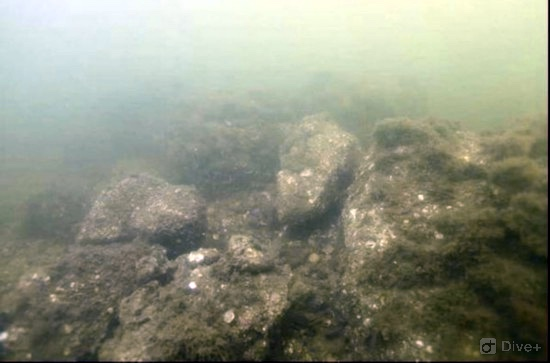
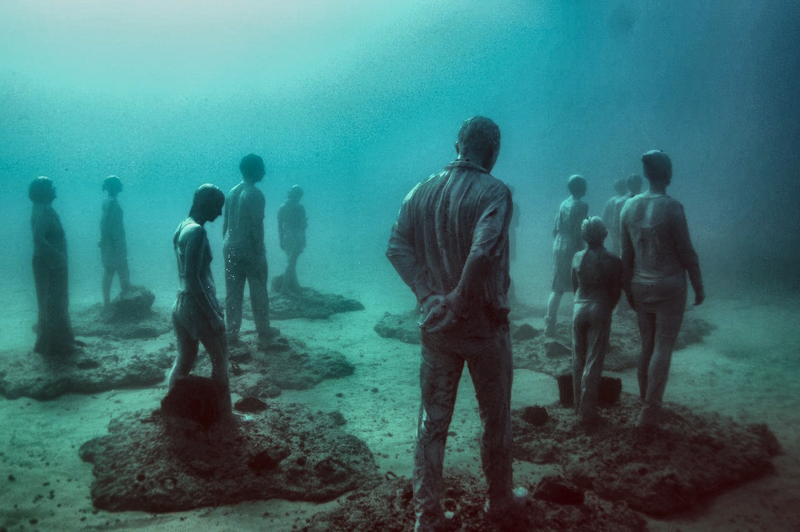
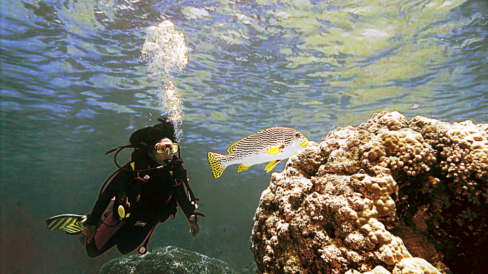
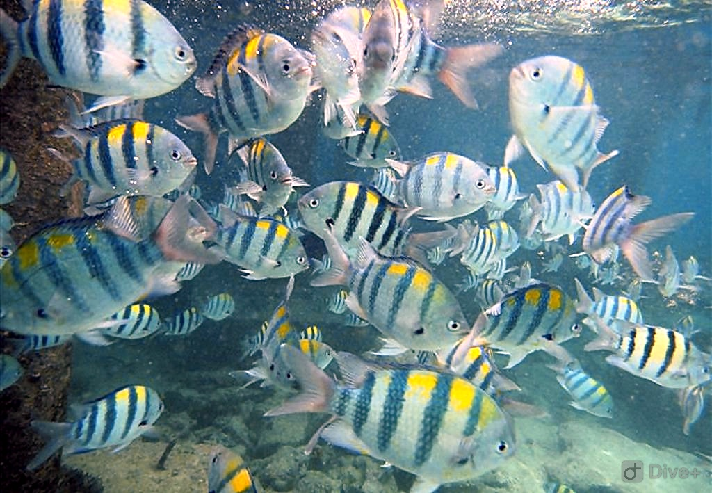
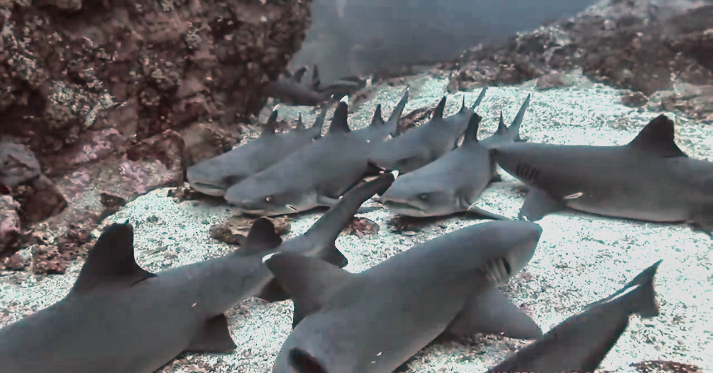
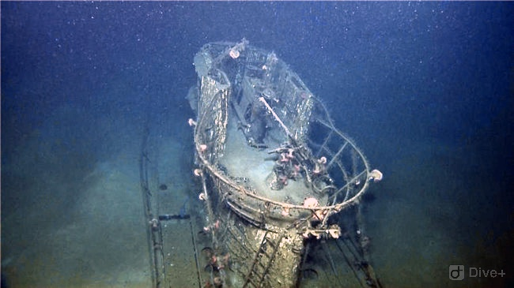
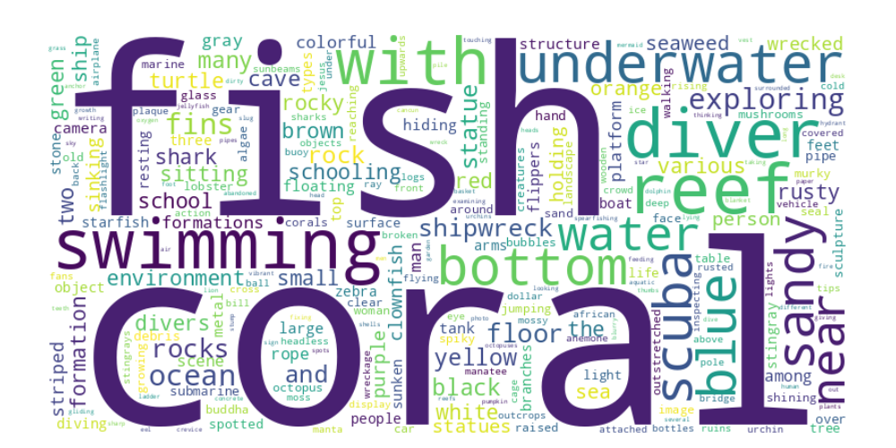
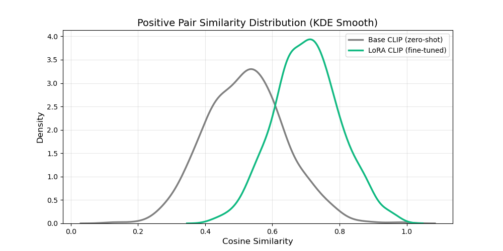

李圳深
多模态｜生成式视觉恢复｜底层视觉｜AIGC｜图像/视频增强
科研项目
生成式图像恢复：基于多模态Flow Matching和Mamba
面向水下图像增强任务，将图像恢复建模为多模态条件生成问题， 基于 Flow Matching 学习从退化分布到高质量分布的连续生成过程， 并结合文本语义条件与 Mamba 高效建模，以及色彩校正在轻量化设置下实现高质量恢复。 利用多模态模型LlaVA构建高质量水下图文数据集，通过LoRA微调CLIP视觉编码器辅助主动学习筛选，生成阶段使用冻结的CLIP文本编码器提取语义，以Self-Attention注入生成主干的每一层，进一步提升极端场景恢复质量。 项目包含两篇独立论文。
(退化+参考)
原始描述
(相似度打分)
低分样本人工重写
(Ideg, Iref, T)
项目亮点
论文一（在审）
- 将 Flow Matching 引入图像恢复任务，建模从退化到清晰图像的连续生成过程，提升复杂退化场景下的恢复能力
- 基于 Mamba 构建高效生成主干，并设计 S2C-SS2D 模块，增强二维长程依赖建模能力，在低参数规模下保持高恢复质量
- 提出面向水下场景的灰度世界白平衡算法并转化为可学习的色彩校正模块，改善颜色偏移问题
- 参数量 9.78M (↓62%)，FLOPs 33.27G (↓50%)，在 UIEB、LSUI 上达到 SOTA


论文二（进行中）
- 子数据集训练： LLaVA 生成初始描述，利用少量人工筛选数据，LoRA 微调 CLIP 视觉编码器（仅0.65%参数），相似度间隔 0.019 → 0.084，R@5 25.6% → 45.0%，验证了筛选有效性。
- 大数据集筛选： 用CLIP-LoRA模型对大规模 LLaVA 生成数据进行相似度打分，通过主动学习筛选边界样本并人工重写，构建高质量水下图文数据集；正样本相似度峰值集中在 0.7 左右，显著优于原始生成数据。
- 生成阶段： 使用 冻结的原始CLIP文本编码器提取文本特征，通过 Self-Attention 注入论文一的生成主干每一层。（实验阶段）

Base (gap=0.019) vs LoRA (gap=0.063)


rock-strewn riverbed underwater environment.

underwater statues on sandy bottom.

diver watching one fish by the reef.

school of colorful fish in open water.

sharks swimming close to the sandy bottom.

wrecked ship on the seabed.
注：参考图像（ref）；文本为清洗后的短句描述。

高频词包括 fish, coral, reef, swimming, diver, shark 等，涵盖丰富的水下实体与场景。

LoRA 微调后，正样本相似度峰值从 0.52 右移至 0.7。
数据集构建
基于图像增强数据构建 (Ideg, Iref, T) 三元组， 其中 Ideg 为退化图像， Iref 为参考高质量图像， T 为对应文本描述。
文本按照“场景语义 + 恢复目标”进行构造，既提供图像内容信息，又引入期望的恢复属性，从而为生成过程提供有效约束。
数据示例
退化图像 / 参考图像 / 文本描述。
结果
- 参数量 9.78M，较基线减少 62%
- FLOPs 33.27G，较基线降低 50%
- 在UIEB，LSUI，SeaThru多个数据集上优于基线方法，并达到 SOTA 水平
模块作用分析
- 多模态条件注入：引入文本语义后，模型对场景内容和颜色风格的恢复更稳定，增强结果更符合语义描述。
- 长程补偿 Mamba：相比基础主干，改进模块增强了二维长程依赖建模能力，在大范围颜色偏移和低光区域恢复中表现更好。
- 灰度世界白平衡：有效缓解水下场景中的颜色偏移问题，为后续生成恢复提供更稳定的输入分布。
第一组：输入 | 使用 Flow Matching | 无 Flow Matching
第二组：输入 | 使用文本条件 | 无文本条件


视频增强与时序一致性建模
解决视频闪烁、跳变，实现稳定文本驱动编辑


专业技能
PyTorch｜Python｜C｜Matlab
Flow Matching｜Diffusion｜DiT｜Stable Diffusion
底层视觉｜图像/视频增强｜多模态｜AIGC
联系方式
GitHub: counterany
邮箱: 你的邮箱